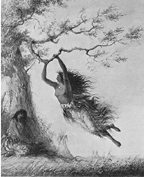

{kind=link}

Representations of American Indians in nineteenth-century American literature were seldom culturally relative. Instead, the author often encoded in the American Indian caricature ("caricature" because these are rarely well-developed characters) his or her assumptions based on racial stereotypes, making the caricature a metonym for all American Indians. While a white villain was not assumed to be a reflection of his or her culture, often the Indian villain was, a fact which is heightened by repeated references to the villain's race. For example, Mark Twain's menacing Injun Joe in The Adventures of Tom Sawyer is commonly referred to in the narrative by pejorative racial terms such as "that murdering half-breed." When Joe kills the body-thieving doctor in the cemetery, he makes the following revealing assertion: "Five year ago you drove me away from your father's kitchen one night, when I come to ask for something to eat, and you said I warn't there for any good; and when I swore I'd get even with you if it took a hundred years, your father had me jailed for a vagrant. Did you think I'd forget? That Injun blood ain't in me for nothing. And now I've got you, and you've got to setttle, you know!" (75) {Emphasis my own].
Instead of simply acting as the evil antagonist of the narrative, Injun Joe calls on his "race" as the reason why he performs evil deeds. Through Joe's caricaturization, Twain manipulates the common nineteenth-century stereotype that Indians have an overly developed sense of vengeance, which they are eager to wreak at any possible moment. Through these narrative techniques, Injun Joe became a standard by which many nineteenth-century Indians were measured.
Not all stereotypes in nineteenth-century literature depicted American Indians as villains; some portrayed them as naturalistic saints. These polarities, demonizing and idealizing, are different forms of romanticizing: idealization romanticizes the positive, and demonization romanticizes the negative. Both terms are expressions of extravagance: the former is extravagant praise, and the latter is extravagant criticism. Neither courts reality more than the other; both equally ignore it.
This painting by Thomas Cole is an excellent example of sentimentalizing. The American Indian woman is presented as the sexual racial "Other." Naked from the waist up, her sexuality is open to the viewer's perusal. Furthermore, carefree swinging characterizes her as the metaphoric innocent savage, childlike in her wonder before civilization's advance.
What do "Sentimentalizing" and "Demonizing" mean?
Ever since westward expansion and the rapid decimation of Native Americans in the nineteenth century, an interesting phenomenon has occurred in terms of American society's approach to Native American culture. A loose movement of people embraced Native American "spirituality" as a panacea for what was wrong in society. Some individuals equated Native Americans with Nature that was threatened by industrialism's rise. Because the Indian's political and societal structure were alien to the individuals, they assumed that the Indian did not possess these structures, and therefore was not inhibited by them. The Native American possessed the "freedom" that the individuals were denied within the stringent mores of civilization; the Indian became a metaphor for the individuals' desire.
Another movement, and one that triumphed in terms of legislature and social policy, was seethed in violence and hatred for this threatening class of people who did not have any place in a rapidly expanding European-based society. Guided by a splintered Darwinian ideology, demonizers took a few Native Americans' susceptibilities to alcohol and established that as a characteristic that applied to every Native American, regardless of tribal affiliation. Moreover, not understanding gendered separation of labor or elaborate social hierarchies, individuals classed Native Americans as lazy, and therefore diagnosed various tribes as doomed to be obliterated by European "progress" and "civilization." In this scenario, the Native American was not a metaphor of desire, but rather one of fear.
 |
| This image accurately captures the dominant American ideology that was manifest in westward expansion. Notice the Native Americans in the bottom left corner peacefully accepting their removal westward. |
While it is unknown exactly when or how these polarities were substantiated, it is nineteenth century writers' depictions of Native Americans that "set the standard" for the nation. On American soil, James Fenimore Cooper (1789-1851) was the progenitor of these representations and is an appropriate figure with which to examine sentimentalization and demonization of Native Americans at the beginning of the century.
Not everyone enthusiastically accepted Cooper's representations of American Indians. From 1870 to his death in 1910, Mark Twain developed several texts which challenged Cooper's Native Americans. His argument was basically one of genre distinctions, for Twain, a staunch Realist, reacted against Cooper's popular Romanticism that also marked the hated Sir Walter Scott texts that Twain parodied in works like A Connecticut Yankee in King Arthur's Court. However, in his texts, Twain failed to substantiate a more "realistic" view of Native Americans; instead, he demonized Native Americans by making them reflect only the negative traits. Ironically, even though he maintained vehement criticism against Cooper's unrealistic narratives, Twain reinscribed similar patterns.
Within the spectrum that Cooper, who ushers in the nineteenth century, and Twain, who sees the nineteenth century come to a close, create in terms of American Indian representation, there are several important authors and artists whose nineteenth-century representations of American Indians should be considered as well. Some of these artists and authors are discussed in this site.
What is the relation between this site and Henry Nash Smith's Virgin Land? Continue to find out!